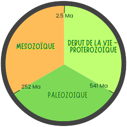

Nous allons découvrir les différentes époques à travers lesquelles la vie s'est développée.
Depuis la formation de la Terre, la vie a connu une évolution progressive marquée par plusieurs grandes étapes géologiques majeures. L'ère Protérozoïque (2,5 à 0,54 milliards d'années) est une période clé de l'histoire de la Terre, marquée par l'apparition des premiers eucaryotes et des organismes multicellulaires simples, ainsi que par la Grande Oxydation, qui enrichit l'atmosphère en oxygène et permet le développement de formes de vie plus complexes. Vers la fin du Protérozoïque, des glaciations mondiales et la formation de supercontinents comme Rodinia favorisent l'émergence de la faune édicarienne, première faune multicellulaire marine diversifiée. Cette complexification prépare le terrain pour les animaux à squelettes de l'explosion cambrienne, qui marque le début du Paléozoïque. Au cours du Paléozoïque, la vie se diversifie fortement : plantes, arthropodes et premiers vertébrés terrestres apparaissent, tandis que les océans et les terres voient l'installation d'écosystèmes complexes. La grande extinction Permien-Trias met fin à cette ère et ouvre directement le Mésozoïque, période dominée par les dinosaures, les reptiles et la diversification des vertébrés terrestres et marins, poursuivant l'évolution de la vie complexe initiée dès le Protérozoïque.

Utilisez la montre pour naviguer entre les époques
